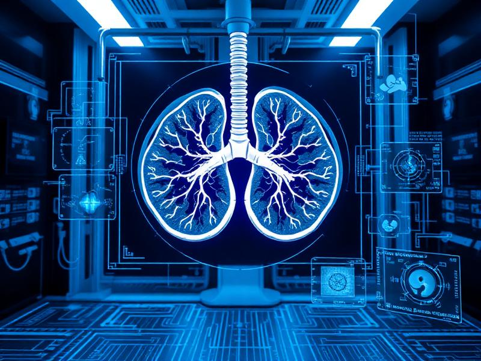
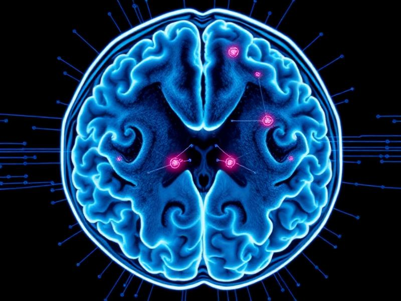

PulmoAID – Multimodal Lung Cancer Diagnostics
Developed a novel multimodal deep learning algorithm integrating CT imaging with demographic and clinical data to enhance lung cancer detection. Built a global web application for real-world screening.
Python
Deep Learning
LLM-driven Interpretability
Streamlit
NeuroAID – Brain Tumor Detection
Explainable AI system for automated brain tumor detection and classification using MRI data, deployed as a global screening web app.
Python
Machine Learning
Explainable AI
Streamlit


RecycleBot – Automated Waste Detection
CNN image classifier that distinguishes recyclable from organic waste; shipped as a web app and published in a peer-reviewed journal.
Python
CNN
Computer Vision
Streamlit
Autonomous Driving Sensor Fusion
Deep reinforcement learning for optimal sensor selection and fusion across Cameras, LiDAR, and Radar.
Python
Deep Reinforcement Learning
Sensor Fusion


Exoplanet Transit Follow-up (TOI-5516.01)
Ground-based light-curve follow-up and validation of a TESS Object of Interest using GMU’s 0.8 m telescope; reduction and analysis in AstroImageJ.
AstroImageJ
Photometry
Python